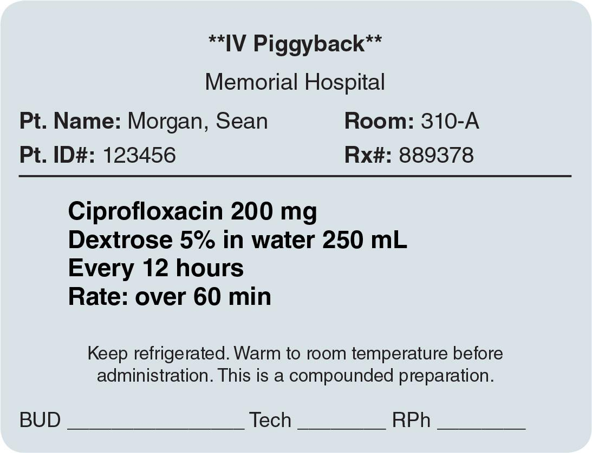
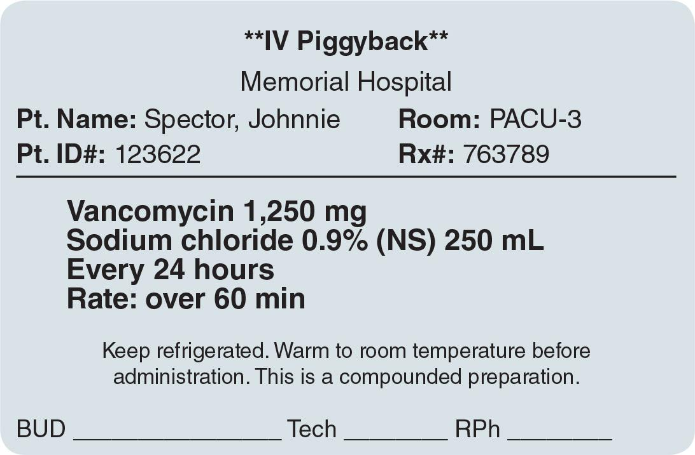
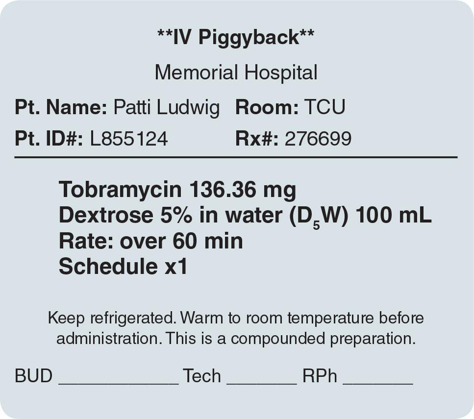
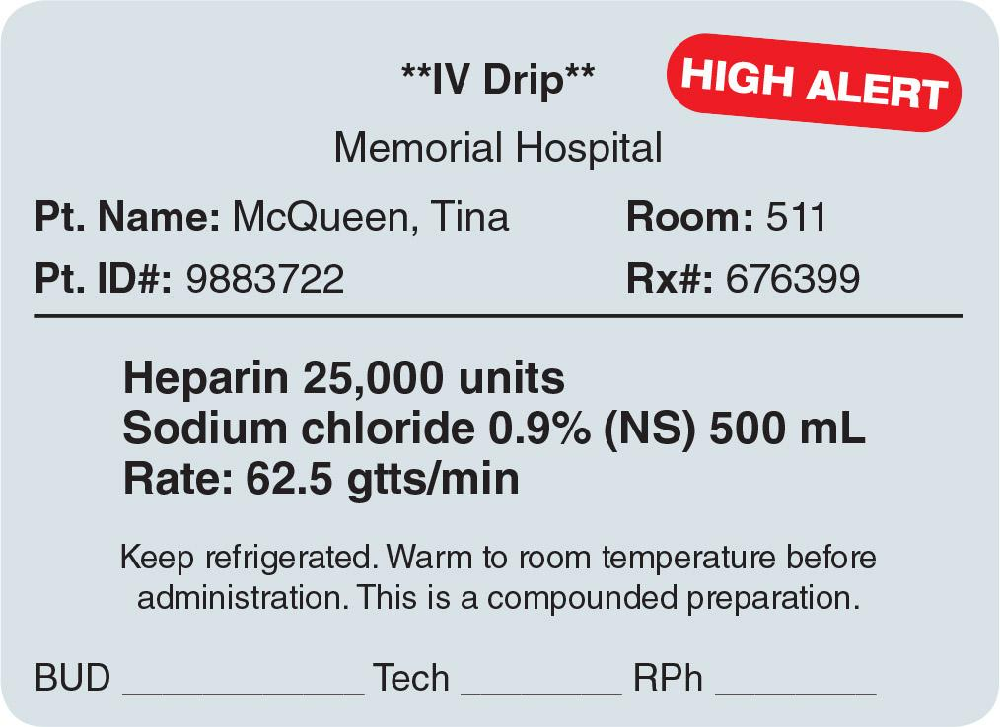
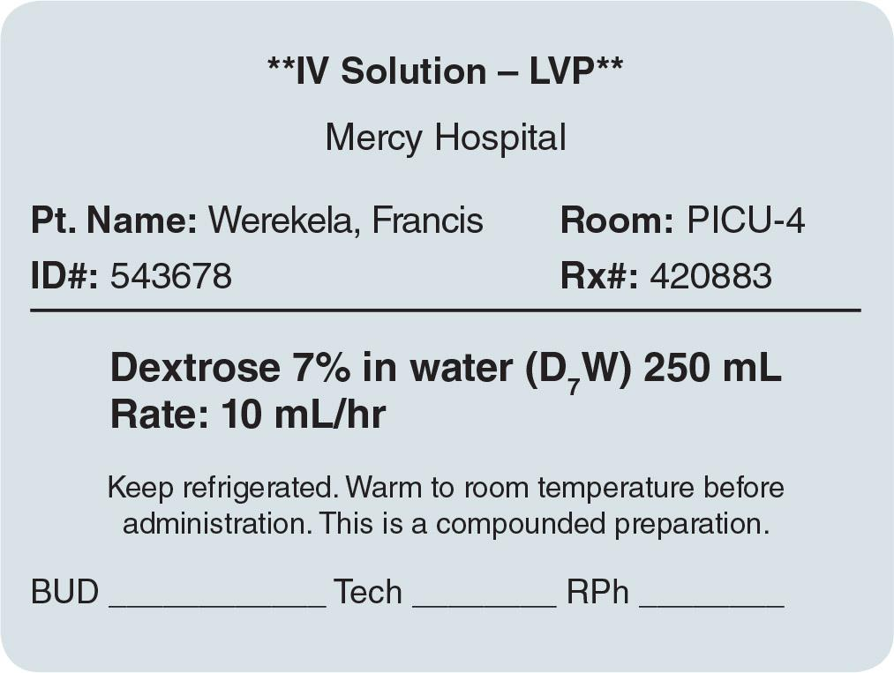
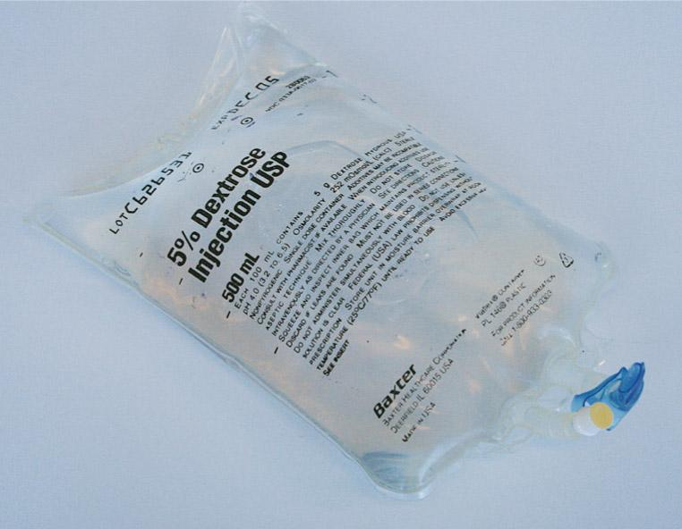
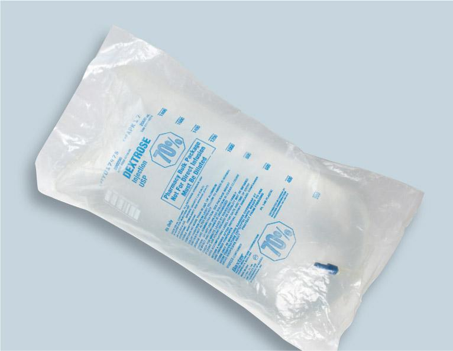

PART 1: CONCEPTS
7.5 Pharmacy Calculation Methods
The most commonly used pharmacy calculation methods are the basic formula, ratio and proportion, dimensional analysis, IV flow rate, IV drop factor, and alligation. Sterile compounding personnel should consider several factors when choosing a pharmacy calculation method. These factors include the compounding scenario, the sterile compounding policies and procedures of the facility in which they practice, and their own personal preference. Regardless of the calculation method used, personnel should always double-check all calculations to verify the accuracy of the process as well as the final answer. Accurate pharmacy dosage calculations are an essential aspect of patient safety.
Basic Formula Calculations
The basic formula method is a simple process to calculate the volume or amount of most parenteral medications and may be used when the concentration on the ingredient label is provided in units per one milliliter (often written as milligrams per milliliter [mg/mL]). This commonly used method is based on the following formula:
D/H = x mL
D = desired dose (the dose ordered by a prescriber on a medication order)
H = concentration on hand (the concentration or strength of the drug or ingredient per one milliliter, found on the ingredient label of a vial or an ampule)
x = unknown volume of drug needed to be drawn up for the preparation of a CSP
Criteria
The basic formula method for solving pharmacy dosage calculations is best used in sterile compounding scenarios that meet any of the following criteria:
- A prescriber has ordered a CSP with a single medication additive.
Examples: The medication order indicates an IV bag with 40 mEq of potassium chloride or an IVPB bag with 120 mg of gentamicin. - The drug is in a liquid injectable form (i.e., does not require reconstitution prior to use).
- The ingredient label provides the concentration of the drug in number of units (i.e., milligrams [mg] or milliequivalents [mEq]) per one milliliter).
Performing a Basic Formula Calculation
To perform a basic formula calculation, sterile compounding personnel must find the desired dose (D) on the medication order or CSP label and record that number. Next, they must locate the concentration of the drug (identified in mg/mL) on the ingredient label; this number (H) represents the concentration on hand. Finally, personnel must divide the desired dose (D) by the concentration of the drug (H) to determine the volume of drug (x) in milliliters needed to be drawn up for the preparation of the CSP. To recap, sterile compounding personnel must do the following:
- Find the desired dose (D), as described above.
- Determine the concentration on hand (H), as described above.
- Divide D by H; the resulting answer equals x mL.
Basic Formula Example
A prescriber has written a medication order to administer 120 mg of gentamicin IVPB. The label on the vial of gentamicin states that gentamicin has a concentration of 40 mg/mL (see Figure 7.2).
In this scenario, the desired dose (D) is 120 mg, and the concentration on hand (H) is 40 mg/mL. Sterile compounding personnel must determine the unknown volume of drug (x) needed to be drawn up for the preparation of the CSP.
Sterile compounding personnel must divide the desired dose (120 mg) by the concentration on hand (40 mg/mL) to determine the volume of drug needed to prepare a CSP delivering 120 mg of gentamicin:
D = 120
H = 40
x = ? mL
120/40 = 3
x = 3 mL
Answer: The answer to this pharmacy calculation using the basic formula method is 3 mL.
Workplace Wisdom
Although the basic formula method is recommended for use when the ingredient label indicates the drug concentration in milligrams per one milliliter, this method can also be applied to ingredient labels that provide the drug concentration in milligrams per multiple milliliters. Personnel must simply reduce the concentration of the drug to per 1 mL before using the formula. The following example demonstrates this concept:
A prescriber has written a medication order to administer 40 mg of famotidine. The label on the vial of famotidine states that the concentration is 20 mg/2 mL.
To perform this calculation, personnel must reduce the concentration to identify the number of milligrams per per one milliliter (1 mL). To do so, both numbers must be divided by 2: 20 mg/2 mL = 10 mg/1 mL. Then they must plug in the concentration per 1 mL into the basic formula:
D = 40
H = 10
x = ? mL
40/10 = 4
x = 4 mL
Answer: The volume of famotidine needed is 4 mL.
Ratio and Proportion Calculations
The ratio and proportion method is another calculation process that is used frequently in the sterile compounding environment. An equation that states two ratios are equal is called a proportion. The ratio and proportion method may be used whenever three of the four values in a proportion are known, thus allowing sterile compounding personnel to solve for the fourth, unknown value of the proportion. This method is based on the following formula:
\[
\frac{\text{H mg}}{\text{Y mL}} = \frac{\text{D mg}}{x\;\text{mL}}
\]
H mg = number of milligrams on hand (per the given number of milliliters on hand; from the concentration stated on the stock ingredient’s label)
Y mL = number of milliliters in the concentration on hand (per the given number of milligrams on hand; from the concentration stated on the stock ingredient’s label)
D mg = desired dose (number of milligrams in the dose ordered by the prescriber)
x mL = unknown desired volume (in milliliters) of the drug needed to be drawn up for the preparation of the CSP
Criteria
The ratio and proportion method for solving pharmacy dosage calculations is best used in sterile compounding scenarios that meet any of the following criteria:
- The stock ingredient is already in a liquid, injectable form (does not need to be reconstituted). However, the ingredient label identifies the concentration of the drug in a form other than milligrams per one milliliter (i.e., the concentration is identified as the amount of milligrams per multiple milliliters [e.g., 500 mg/5 mL or 40 mEq/20 mL]).
Example: The label for levetiracetam indicates that the concentration is 1,000 mg/5 mL, and the CSP label indicates that the patient needs a 750 mg dose. - The stock drug is in a powdered form and requires reconstitution prior to drawing it up for injection.
- Either a liquid or a powdered drug requires the completion of several additional steps to solve the problem.
Performing a Ratio and Proportion Calculation
To perform a ratio and proportion calculation, sterile compounding personnel must find the concentration of the reconstituted drug on the ingredient label, and record that number, in fraction form, so that the concentration of the drug in milligrams (H mg) is above the concentration of the drug in milliliters (Y mL). Next to this concentration, or ratio, they must place an equal sign and then write, in fraction form, the desired dose in milligrams (D mg) above the unknown desired volume (x mL).
This calculation setup communicates that one ratio is equivalent to the other ratio. Personnel can now cross-multiply (Y × D) and then divide that answer by H to solve for the proper dose (x) in milliliters. To recap, sterile compounding personnel must:
- Set up the ratio, as described above.
- Cross-multiply Y × D.
- Divide the answer from step 2 by H. The resulting answer equals x mL.
Ratio and Proportion Example—Scenario One
A prescriber has written a medication order to administer 200 mg of ciprofloxacin IVPB. The label on the vial shows a stock ingredient of ciprofloxacin with a concentration of 400 mg of ciprofloxacin in 40 mL of solution (see Figures 7.3 and 7.4).

View long description Hide description
The label reads as follows:
I V piggyback, memorial hospital, patient name, room, patient ID number, RX number. Ciprofloxacin 200 milligrams, dextrose 5 percent in water 250 milliliters every 12 hours, rate: over 60 minutes. Keep refrigerated. Warm to room temperature before administration. This is a compounded preparation. Add bottom: B U D, tech, and R P h.
In this example, the concentration on hand (H mg/Y mL) is 400 mg per 40 mL. The desired dose (D mg) is 200 mg. The unknown volume of the desired dose is x mL. Using this information, sterile compounding personnel must set up a proportion:
\[
\frac{400\;\text{mg}}{40\;\text{mL}} = \frac{200\;\text{mg}}{x\;\text{mL}}
\]
H = 400 mg
Y = 40 mL
D = 200 mg
x = ? mL
40 × 200 = 8,000
8,000/400 = 20
x = 20 mL
Answer: The amount of ciprofloxacin needed to provide a 200 mg dose is 20 mL.
Workplace Wisdom
Sterile compounding personnel can use an alternative approach when setting up the “Ratio and Proportion Example—Scenario One”:
A prescriber has written a medication order to administer 200 mg of ciprofloxacin IVPB. The label on the vial shows a stock ingredient of ciprofloxacin with a concentration of 400 mg of ciprofloxacin in 40 mL of solution.
- Personnel must note the drug’s concentration (H) on hand and the desired dose (D):
H = 400 mg/40 mL
D = 200 mg - Next, they must reduce the drug’s concentration (H) to identify milligrams per 1 mL:
\[
\frac{400\;\text{mg}}{40\;\text{mL}} = \frac{10\;\text{mg}}{1\;\text{mL}}
\] - Then personnel must place the drug concentration on hand (H) on the left side of the equal sign and the desired dose (D) on the right side of the equal sign:
\[
\frac{10\;\text{mg}}{1\;\text{mL}} = \frac{200\;\text{mg}}{x\;\text{mL}}
\] - Finally, they must solve for x:
\[
\frac{200\;\text{mg} \times 1\;\text{mL}}{10\;\text{mg}}
\]
x = 20 mL
Answer: The volume of ciprofloxacin needed is 20 mL.
Ratio and Proportion Example—Scenario Two
A prescriber has written a medication order to administer 1,250 mg of vancomycin IVPB. The pharmacy has on hand a 10 g vial of vancomycin, and the label shows that, after reconstitution, with 100 mL of sterile water for injection, the concentration will be 500 mg/10 mL (see Figure 7.5). (Note: For drugs that require reconstitution, sterile compounding personnel must first reconstitute the powder according to the manufacturer’s directions. This information is provided on the medication label or in the drug’s package insert. They must then use the concentration of the drug in its reconstituted [injectable] form to perform the calculation.)

View long description Hide description
The label reads as follows:
I V piggyback, memorial hospital, patient name, room, patient ID number, RX number. Vancomycin 1,250 milligrams, sodium chloride 0.9 percent (N S) 250 milliliters every 24 hours, rate: over 60 minutes.
In this example, the concentration on hand (H mg per Y mL) is 500 mg per 10 mt L. The desired dose (D mg) is 1,250 mg (see Figure 7.6). The unknown volume of the desired dose is x mL. Using this information, sterile compounding personnel must set up a proportion:
\[
\frac{500\;\text{mg}}{10\;\text{mL}} = \frac{1,250\;\text{mg}}{x\;\text{mL}}
\]
H = 500 mg
Y = 10 mL
D = 1,250 mg
x = ? mL
1,250 × 10 = 12,500
12,500/500 = x
x = 25 mL
Answer: The amount of vancomycin that must be drawn up to provide a 1,250 mg dose is 25 mL.
Workplace Wisdom
Sterile compounding personnel can use an alternative approach when setting up a ratio and proportion calculation. This approach is demonstrated using the same scenario as outlined in the “Ratio and Proportion Example—Scenario Two”:
A prescriber has written a medication order to administer 1,250 mg of vancomycin IVPB. The pharmacy has on hand a 5 g vial of vancomycin, and the label shows that, after reconstitution with 100 mL of sterile water for injection, the concentration will be 500 mg/10 mL.
- For this alternative approach, sterile compounding personnel need to note the drug’s concentration (H) on hand in the pharmacy and the desired dose (D):
H = 500 mg/10 mL
D = 1,250 mg - As mentioned earlier, personnel who are performing pharmacy calculations want to always work with a drug concentration that is milligrams per 1 mL (mg/mL). In this scenario, the concentration is given in milligrams per 10 mL (mg/10 mL). To remedy that situation, personnel must reduce the drug’s concentration (H) to identify the number of milligrams per 1 mL:
\[
\frac{500\;\text{mg}}{10\;\text{mL}} = \frac{50\;\text{mg}}{1\;\text{mL}}
\] - Next, sterile compounding personnel must place the drug concentration they have on hand (H) on the left side of the equal sign and the desired dose (D) on the right side of the equal sign. The unit of measure in the numerator and denominator on both sides of the equal sign must always match:
\[
\frac{50\;\text{mg}}{1\;\text{mL}} = \frac{1,250\;\text{mg}}{x\;\text{mL}}
\] - Finally, they must solve for x:
\[
\frac{1,250 \times 1\;\text{mL}}{50\;\text{mg}}
\]
x = 25 mL
Answer: The volume of vancomycin needed is 25 mL.
Ratio and Proportion Example—Scenario Three
A prescriber has written a medication order to administer a single dose of tobramycin that is to be 2 mg/kg of the patient’s body weight. The medication order indicates that the patient weighs 150 lb. The label on the vial of tobramycin indicates that the concentration of the drug is 80 mg/2 mL (see Figure 7.7).
To determine this dose, sterile compounding personnel must perform several calculations to resolve the final amount of drug to draw up to prepare the CSP. First, they must determine the patient’s weight in kilograms. (Refer to Table 7.2 for the conversion factor from pounds [lb] to kilograms [kg].) Next, they must calculate the desired dose based on the patient’s weight in kilograms. Finally, personnel must determine the amount of tobramycin to draw up to prepare a CSP that delivers the correct dose (see Figure 7.8). The following steps explain this calculations process.
- To determine the patient’s weight in kilograms, sterile compounding personnel must solve for x:
\[
\frac{1\;\text{kg}}{2.2\;\text{lb}} = \frac{x\;\text{lb}}{150\;\text{lb}}
\]
1 × 150 = 150
150/2.2 = x
x = 68.18 kg (the patient’s weight in kilograms)
- Next, personnel must determine the desired dose by multiplying the prescriber-ordered amount (2 mg) by the patient’s weight (68.18 kg):
2 × 68.18 = 136.36 mg (the desired dose)
- Finally, they must use the ratio and proportion method to determine the amount of drug to be drawn up for the CSP:
\[
\frac{80\;\text{mg}}{2\;\text{mL}} = \frac{136.36\;\text{mg}}{x\;\text{mL}}
\]
H = 80 mg
Y = 2 mL
D = 136.36 mg
x = ? mL
2 × 136.36 = 272.72
272.72/80 = x
x = 3.409 mL (rounded to 3.4 mL)
Answer: The amount of drug that must be drawn up to prepare a CSP delivering 136.36 mg of tobramycin is 3.4 mL.
Although there are many calculations that can be used to arrive at the same answer, it is important for sterile compounding personnel to use only those calculations that are widely approved by the pharmacy community and that adhere to their specific workplace standards. As stated earlier, standardization in pharmacy is critical for safe practice. Unlike the past dosing rules that created such variance in children’s doses, prescribers now follow universal standards for determining the desired dose of parenteral medications: the patient’s body weight or the patient’s body surface area (BSA).

View long description Hide description
The label reads as follows:
I V piggyback, memorial hospital, patient name, room, patient ID number, RX number. Tobramycin 136.36 milligrams, dextrose 5 percent in water (D5W) 100 milliliters, rate: over 60 minutes, schedule one time. Keep refrigerated. Warm to room temperature before administration. This is a compounded preparation. Add bottom: B U D, tech, and R P h.
Dimensional Analysis Calculations
The dimensional analysis method, also known as “calculation by cancellation,” is another approach that some sterile compounding personnel prefer to use when a dosage calculation involves multiple steps. This method is based on the principle that any number can be multiplied by one without changing its value.
Unlike the basic formula and ratio and proportion methods, the dimensional analysis method is not based on a set formula. To solve a pharmacy calculation problem using this method, personnel must first determine the question they are being asked to solve and then use the values provided in the text to perform a series of calculations. This mathematical process reveals the missing values necessary to arrive at a solution.
Criteria
The dimensional analysis method for solving pharmacy dosage calculations is best used in sterile compounding scenarios that meet either of the following criteria:
- To determine the volume of drug needed to prepare the CSP, sterile compounding personnel must answer several questions by performing multiple calculations.
- Sterile compounding personnel must make one or more conversions between various units of measure.
Example: A prescriber has written a medication order that asks for a vancomycin dose of 100 mg/kg for a patient who weighs 150 lb, requiring a conversion from a household system of measurement to a metric system of measurement.
Performing a Dimensional Analysis Calculation
A typical way for sterile compounding personnel to set up a dimensional analysis equation is to put the unknown quantity (x) on its own on the left side of the equation, followed by an equal sign. On the right side, personnel must record a series of ratios, using both standard equivalents from Table 7.2 and information provided on the ingredient label (such as the drug concentration in milligrams/milliliter [mg/mL]) and the CSP label (such as the desired dose in milligrams [mg]). They must then multiply the ratios together to provide the answer to the problem.
The unit of measure in the numerator of the first ratio must be the same as the unit of measure needed in the solution, and the unit of measure in each successive numerator must match the unit of measure in the preceding denominator. As a result of this setup, the units of measure in each alternate numerator–denominator cancel out, and the remaining unit of measure is the one needed for the solution.
The following example uses the information presented in the “Ratio and Proportion Example—Scenario Three” but performs the calculations using the dimensional analysis method.
Dimensional Analysis Example
A prescriber has written a medication order to administer a single dose of tobramycin to be dosed at 2 mg/kg of the patient’s body weight. The medication order also indicates that the patient weighs 150 lb. The label on the vial of tobramycin states that the concentration of the drug is 80 mg/2 mL.
- In this scenario, the unknown quantity is x mL. Therefore, sterile compounding personnel must place the unknown quantity on the left side of the equation, followed by the equal sign:
x mL =
- The first ratio on the right side of the equal sign must have the same unit of measure—milliliters (mL)—in its numerator. Because the concentration is 80 mg/2 mL, personnel must invert that fraction so that 2 mL appears in the numerator:
\[
x\;\text{mL} = \frac{2\;\text{mL}}{80\;\text{mg}}
\] - The next ratio must contain the same unit of measure—milligrams (mg)—in its numerator. The ordered dose, 2 mg/kg, has milligrams in its numerator. Therefore, personnel must plug in that ratio next in the calculation.
\[
x\;\text{mL} = \frac{2\;\text{mL}}{80\;\text{mg}} \times \frac{2\;\text{mg}}{1\;\text{kg}}
\] - Using the pounds-to-kilograms conversion factor shown in Table 7.2, personnel should plug in the conversion factor next. Again, they should ensure that kilograms (in this case, 1 kg) appears in the numerator of the ratio. Finally, they should place the patient’s weight (in this case, 150 lb) in the numerator of the next ratio.
\[
x\;\text{mL} = \frac{2\;\text{mL}}{80\;\text{mg}} \times \frac{2\;\text{mg}}{1\;\text{kg}} \times \frac{1\;\text{kg}}{2.2\;\text{lb}} \times \frac{150\;\text{lb}}{1}
\] - Now that the dimensional analysis calculation is set up, sterile compounding personnel must cancel out similar units of measure:
\[
x\;\text{mL} = \frac{2\;\text{mL}}{80\;\cancel{\text{mg}}} \times \frac{2\;\cancel{\text{mg}}}{1\;\cancel{\text{kg}}} \times \frac{1\;\cancel{\text{kg}}}{2.2\;\cancel{\text{lb}}} \times \frac{150\;\cancel{\text{lb}}}{1}
\] - Next, they must multiply all numerators together and all denominators together, which results in the following equation:
\[
x\;\text{mL} = \frac{600\;\text{mL}}{176}
\] - Finally, they must divide the numerator by the denominator:
x = 3.4 mL
Answer: The amount of drug that must be drawn up to prepare a CSP delivering 80 mg of tobramycin is 3.4 mL.
IV Flow Rate Calculations
In addition to compounding newly ordered CSPs, sterile compounding personnel are also responsible for preparing the CSPs needed for all patients for a specified period. This task is often referred to as preparing the batch and typically requires personnel to compound a 24-hour supply of CSPs for each patient. The patient-specific amount is commonly referred to as the day’s supply.
Batch preparation requires multiple calculations using a variety of calculation methods. These methods are determined by a facility’s policy and are based on the type of CSPs being prepared. For example, when preparing a day’s supply of LVPs, sterile compounding personnel typically use IV flow rate calculations.
To determine how many LVPs are needed for a 24-hour batch period for an individual patient, personnel frequently use one of several types of IV flow rate calculations to determine the answer to one or more of the following questions:
- How long will this IV bag last (i.e., how many hours before this bag runs dry and a new bag is needed)?
- What time will the next IV bag be needed?
- How many IV bags will be needed for the patient for a 24-hour period?
These questions may all be addressed using IV flow rate calculations that employ simple addition, division, and/or multiplication. The answers provide the information that sterile compounding personnel need to prepare the correct number of CSPs for a 24-hour batch period.
Unlike the basic formula and ratio and proportion methods, IV flow rate calculations are not based on a set formula. To solve a pharmacy calculation problem using this method, personnel must first determine the answer needed and then use the values provided in the medication order or on the CSP label to perform a series of calculations. This mathematical process reveals the missing values necessary to arrive at a solution.
Criteria
The three methods for addressing IV flow rate questions are best used in sterile compounding scenarios that meet the following criteria:
- The infusion rate in milliliters/hour (mL/hr) is provided on the medication order or on the CSP label.
- The total volume is provided on the medication order or on the CSP label.
- The current time is known or may be easily determined.
Performing an IV Flow Rate Calculation
The answers to the three questions posed on the previous page can be determined by setting up a division or a multiplication problem. When calculating IV flow rates, sterile compounding personnel must know the total volume of the LVP and either 1) the infusion rate in milliliters per hour (mL/hr) or 2) the number of hours over which the LVP is to be infused. This information can be found on the medication order or on the CSP label. (Note: Depending on the medication order, personnel may need to convert from liters [L] to milliliters [mL] prior to performing the calculations below.)
IV Flow Rate Example
The medication order indicates that the prescriber has ordered a continuous infusion of dextrose 5% in water (D5W) at 125 mL/hour, and the pharmacy will provide the solution in 1,000 mL bags. Using this scenario, sterile compounding personnel must answer the following questions:
- How long will this IV bag last? To answer this question, personnel must perform the following calculation: Divide the total volume (TV) by the infusion rate (IR). The total volume of the LVP in this scenario is 1,000 mL. The infusion rate is 125 mL/hour.
TV = 1,000 mL
IR = 125 mL/hour
x = number of hours the IV bag will last
1,000/125 = x
x = 8 hours
Answer: The answer to the question—“How long will this IV bag last?”—is 8 hours. - What time will the next IV bag be needed? To answer this question, personnel must perform the following calculations:
- First, they must determine how long the IV bag will last. To make this determination, they must perform the same calculation they did to answer the first question: dividing the total volume (TV) by the infusion rate (IR). The total volume of the LVP is 1,000 mL. The infusion rate is 125 mL/hour.
TV = 1,000 mL
IR = 125 mL/hour
x = number of hours the IV bag will last
1,000/125 = x
x = 8 hours - Then they must add the number of hours that they calculated in step 1 (8 hours) to the current standard time. For the purposes of this example, the current time is 1:00 p.m.
1:00 p.m. + 8 hours = 9:00 p.m.
Answer: The answer to the question—“What time will the next IV bag be needed?”—is 9:00 p.m. (2100 hours in 24-hour time).
- First, they must determine how long the IV bag will last. To make this determination, they must perform the same calculation they did to answer the first question: dividing the total volume (TV) by the infusion rate (IR). The total volume of the LVP is 1,000 mL. The infusion rate is 125 mL/hour.
- How many IV bags will be needed for the patient in a 24-hour period? To answer this question, personnel must perform the following calculations:
- First, they must determine how long the IV bag will last. To complete this task, they must perform the same calculation they did to answer the first question: dividing the total volume (TV) by the infusion rate (IR). The total volume of the LVP is 1,000 mL. The infusion rate is 125 mL/hour.
TV = 1,000 mL
IR = 125 mL/hour
x = number of hours the IV bag will last
1,000/125 = x
x = 8 hours - Finally, they must divide 24 (the number of hours in a day) by their answer to the previous question (the number of hours the IV bag will last).
24/8 = x
x = 3
Answer: The answer to the question—“How many IV bags will be needed for the patient in a 24-hour period?”—is 3 bags.
- First, they must determine how long the IV bag will last. To complete this task, they must perform the same calculation they did to answer the first question: dividing the total volume (TV) by the infusion rate (IR). The total volume of the LVP is 1,000 mL. The infusion rate is 125 mL/hour.
IV Drip Rate Calculations
To determine an IV drip rate calculation utilizing an IV tubing drop factor, sterile compounding personnel frequently use the IV drip rate method, more commonly known as the drop factor method. This method relies on the specific drop factor, or the number of drops per milliliter (gtts/mL), that a certain type of IV tubing delivers. Each type of IV tubing delivers a different drop factor. For example, macrodrip IV tubing may deliver either 10 gtts/mL or 20 gtts/mL, whereas microdrip IV tubing delivers 60 gtts/mL. An equation using drop factor is sometimes called an IV drip rate calculation.
Criteria
The drop factor method for solving pharmacy dosage calculations is best used in sterile compounding situations that meet the following criteria:
- The total volume to be infused is known (i.e., provided by the medication order or the CSP label).
- The total infusion time (the period of time, in minutes, over which the entire volume of the LVP will be administered to the patient) is known.
- The drop factor of the IV tubing is known.
- The desired answer is to be provided in drops per minute (gtts/min).
Performing an IV Drip Rate Calculation
An IV drip rate calculation can be determined by setting up a modified ratio and proportion equation using information provided in the medication order. When calculating IV drip rates, sterile compounding personnel must know the total volume of the LVP; the infusion time (in minutes); and the IV tubing’s drop factor, which is provided on the tubing’s outer packaging. These factors determine how many drops per minute will be administered to the patient.
IV drip rate problems can be solved using the following drop factor method:
\[
\frac{\text{total volume in milliliters (mL)}}{\text{infusion time in minutes (min)}} \times \text{drop factor in gtt/mL} = \frac{\text{drops (gtt)}}{\text{minute (min)}}
\]
(Note: Depending on the medication order, personnel may need to convert from hours to minutes prior to performing the calculations below.)
IV Drip Rate Calculation Example
The medication order indicates that the prescriber has ordered normal saline (NS) 500 mL with 25,000 units of heparin to be infused over 8 hours (see Figures 7.9 and 7.10). The IV tubing’s outer packaging indicates that the tubing is microdrip and has a drop factor of 60 gtts/mL.

View long description Hide description
The label reads as follows:
I V Drip, memorial hospital, patient name, room, patient ID number, RX number. Heparin 25,000 units, sodium chloride 0.9 percent (N S) 500 milliliters, rate: 62.5 gtts per minute. Keep refrigerated. Warm to room temperature before administration. This is a compounded preparation. Add bottom: B U D, tech, and R P h.
- First, sterile compounding personnel must convert from hours to minutes:
8 (hours) × 60 (minutes in one hour) = 480 minutes (min) - Next, they must set up the equation using the information provided in the medication order and on the IV tubing’s outer packaging:
\[
\frac{500}{480} = 1.042
\]
1.042 × 60 = x
x = 62.5 gtts/min
Answer: The number of drops per minute needed to administer this dose of heparin at the prescribed rate using microdrip tubing with a drop factor of 60 gtts/mL is 62.5 (62.5 gtts/min).
Alligation Calculations
Occasionally, a prescriber will write a medication order for a medication strength that is not commercially available or that is not kept on hand in a pharmacy. In these situations, sterile compounding personnel may be required to mix two different strengths of the same active ingredient of a drug or solution to make the desired strength. A higher-percent strength of a drug or solution is mixed with a lower-percent strength of a drug or solution or with another diluent in order to make the desired strength, which falls somewhere between the two extremes. These scenarios require personnel to perform a calculation called the alligation method, or, simply, alligation.
Criteria
The alligation method of solving pharmacy dosage calculations is best used in sterile compounding situations that meet the following criteria:
- Two or more strengths of the same active ingredient or solution must be used to prepare the desired strength of a drug or solution or a higher-strength active ingredient must be combined with a diluent.
- The desired strength of the drug or solution is known (from the medication order or the CSP label).
- The total volume of the CSP is known (from the medication order or the CSP label).
Performing an Alligation Calculation
Figure 7.11 shows how to set up an alligation problem. Sterile compounding personnel should use this template for the alligation example that follows.
| A |
|
D (the difference of B − C) |
|
|
B | |
|
C |
E (the difference of A − B) |
KEY
A = higher concentration or strength (stated as a percent [%])
B = desired concentration or strength (stated as a percent [%])
C = lower concentration or strength (stated as a percent [%])
Alligation Example
The CSP label shown in Figure 7.12 indicates that the prescriber has ordered 250 mL of dextrose 7% in water (D7W). The pharmacy has on hand two strengths: dextrose 5% in water (D5W) and dextrose 70% in water (D70W). Because the value of 7% falls between 5% and 70%, sterile compounding personnel can use these two strengths to make the 7% strength needed for the CSP.

View long description Hide description
The label reads as follows:
The label reads as follows: I V solution-L V P, mercy hospital patient name, room, patient ID number, RX number. Dextrose 7 percent in water (D7W) 250 milliliters and rate: 10 milliliters per hour. Keep refrigerated. Warm to room temperature before administration. This is a compounded preparation. Add bottom: B U D, tech, and R P h.
The problem asks you to determine how much D5W (dextrose concentration of 5% [see Figure 7.13]) and D70W (dextrose concentration of 70% [see Figure 7.14]) must be combined to make a solution of D7W (dextrose concentration of 7%) and a total volume of 250 mL for IV administration.


To prepare the CSP, sterile compounding personnel must mix two different strengths of dextrose to achieve the desired strength that the prescriber has ordered. The following steps help personnel set up the alligation template to perform the required pharmacy calculations:
- To begin the calculations process, personnel must identify the variables by determining the component concentrations. The desired concentration (B%) is what the prescriber has written on the medication order and, therefore, is indicated on the CSP label. The higher concentration (A%) and lower concentration (C%) are determined by the stock IV base solution strengths on hand in the pharmacy. In this case, the desired concentration is 7%; the higher concentration is 70%; and the lower concentration is 5%.
- Using the alligation template from Figure 7.11, personnel must fill in the concentration strengths (given as percentages) in the key section below the tic-tac-toe alligation grid. They should then place these same strengths in their designated squares on the grid.
|
B (desired %) 7 |
||
|
C (lower %) 5 |
E (parts of lower %; the difference of A − B) | |
|
A (higher %) 70 |
D (parts of higher %; the difference of B − C) |
KEY
A% = 70
B% = 7
C% = 5
D (parts of 70% solution) =
E (parts of 5% solution) =
- To find the value of D in the upper right square, personnel must set up the equation B – C = D. Then they must fill in the values for B and C (found in step 2) in the equation, as shown below:
7 − 5 = D
D = 2 (or the number of parts of 70% dextrose)
Next, they must record the number 2 in the key and in the upper right square. - To find the value of E in the lower right square, sterile compounding personnel must set up the equation A – B = E. Then they must fill in the values for A and B (found in step 2) in the equation, as shown below:
70 – 7 = E
E = 63 (or the number of parts of 5% dextrose)
Next, they must record the number 63 in the key and in the lower right square. - To verify that their alligation grid has been set up correctly, sterile compounding personnel should compare their grid to the grid shown below:
| A (higher %) 70 | D (parts of higher %) 2 | |
| B (desired %) 7 | ||
| C (lower %) 5 | E (parts of lower %) 63 |
KEY
A% = 70
B% = 7
C% = 5
D (parts of 70% solution) = 2
E (parts of 5% solution) = 63
- Next, personnel must set up a ratio using the values of D and E as shown in the right-hand column of their completed grid:
\[
\frac{\text{D}}{\text{E}} = \frac{2}{63}
\]
This ratio indicates that in order to prepare the desired concentration (in this case, a dextrose 7% solution), dextrose 70% (D70W) and dextrose 5% (D5W) must be mixed in a 2:63 ratio: 2 parts of D70W and 63 parts of D5W. - Using the ratio from step 6, sterile compounding personnel must add together D and E to obtain the total number of parts (TP):
D + E = TP
2 + 63 = TP
65 = TP - To determine the exact volume of each component needed to prepare 250 mL of D7W, personnel must set up a ratio and proportion problem.
To find the volume of D70W needed for the CSP, they must use the following formula:
\[
\frac{\text{D}}{\text{TP}} = \frac{x}{\text{TV}}
\]
D = parts of the higher % solution
TP = total number of parts
TV = total volume of desired concentration
\[
\frac{2}{65} = \frac{x}{250\;\text{mL}}
\]
Cross-multiply: 2 × 250 = 500
Divide: 500/65 = x
x = 7.69 mL (rounded to 7.7 mL) of D70W - To find the volume of D5W needed for the CSP, sterile compounding personnel must use the following formula:
\[
\frac{\text{E}}{\text{TP}} = \frac{x}{\text{TV}}
\]
E = parts of the lower % solution
TP = total number of parts
TV = total volume of desired concentration
\[
\frac{63}{65} = \frac{x}{250\;\text{mL}}
\]
Cross-multiply: 63 × 250 = 15,750
Divide: 15,750/65 = x
x = 242.30 mL (rounded to 242.3 mL) of D5W - Finally, to verify the volume of each component (determined in steps 8 and 9), personnel must add the volumes of the two components. The answer should equal the total volume of the desired concentration.
7.7 mL (D70W) + 242.3 mL (D5W) = 250 mL (total volume of desired concentration)
Chapter 7 Checkpoint
Instructions:
-
Take a moment to reflect on what you have learned in the previous sections and answer the following questions.